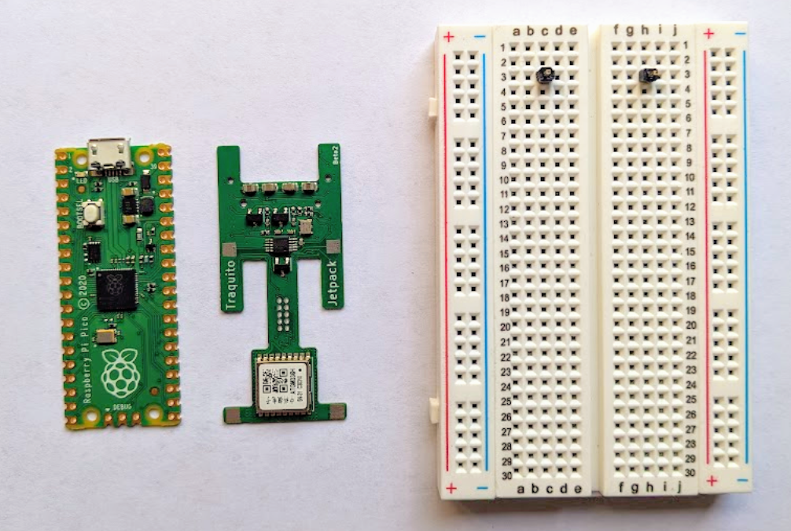
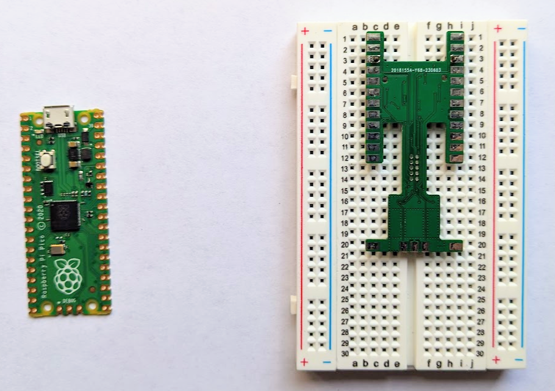
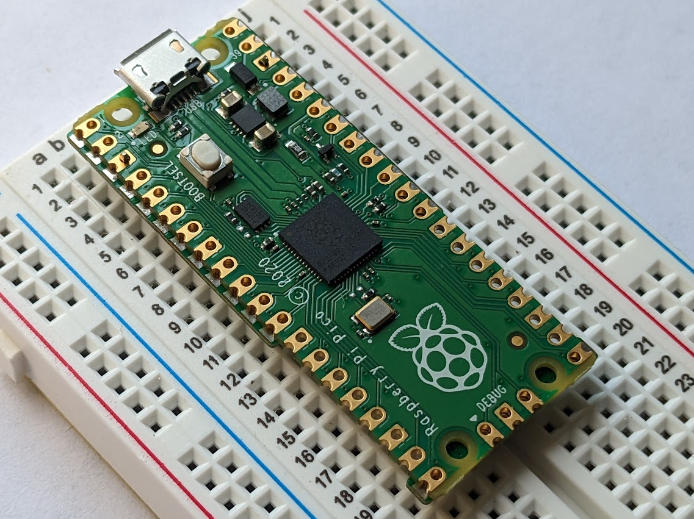
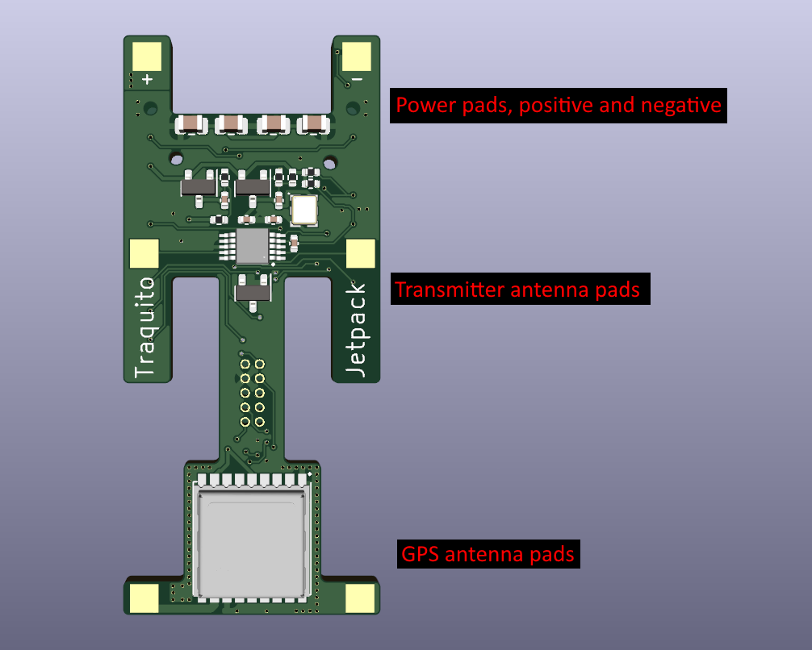

Tracker Hardware - Traquito Jetpack
Jetpack is a custom Traquito-designed pico balloon WSPR tracker aimed at beginners and experienced alike.
The hardware design and software are freely available to all -- you order, assemble, and fly.
Fly cheap - $14 per-tracker, shipped!
Uses Raspberry Pi Pico as base board
Solder on the Add-on Module to complete the Jetpack tracker
Simple to set up and use!
Hardware setup takes 5 minutes and a soldering iron
Plug into USB to drag/drop the tracker software (UF2)
Stay plugged into USB and use the webpage-based configuration utility
Great for schools or beginners
Works with the U4B-protocol telemetry of GPS coordinates, Altitude, Speed, and Voltage.
Pick a free channel, then track your flight!
Supports all WSPR bands (20m and all others).
Wide range of input voltages (3.0V to 5.5V) thanks to buck/boost regulator.
This allows significant flexibility in powering the unit, such as by:
Solar
LiPo
2 or 3 AAA/AA lithium cells in series
| Add-on Module | Jetpack = RPi Pico + Module |
 |
 |
 |
 |
Jetpack Hardware, Software, and Feature Descriptions
See this page for details
How do I get it?
The tracker comes in two parts that you will assemble (solder together) yourself:
- Raspberry Pi Pico
- Add-on Module
Getting the Raspberry Pi Pico means buying it from somewhere, Adafruit is a good option.
(Get the cheapest no-header version, should be $4).
Getting the Add-on Module means submitting an order to the PCB Assembly service at JLCPCB -- See here: (link)
Solder the Add-on Module to the back of the RPi Pico to create the Jetpack tracker.
Assembly
It is best to assemble (solder together) on a breadboard, using two header pins to lock together the alignment of the Add-on Module and the RPi Pico.
- Place the header pins on the 3rd row and 3rd column of each of the two halves of the breadboard
- Place the Add-on Module, flipped, so the back pads are facing upward
- Place the RPi Pico on top
- Now you are ready to solder the two parts together
- (Solder all module pads except "debug" pads)
Just make sure you don't solder the pins to the tracker!
Solder all other pads first, then remove the tracker from the breadboard and solder the final two pads that were used for alignment.



Programming
Once you have assembled (soldered) your tracker, you must program it.
Programming means putting the tracker software onto the physical device hardware. Without software, the tracker hardware does nothing.
The steps to program your tracker are:
- Hold the Pico "bootsel" button down and plug the tracker into the computer via USB
- (a removable drive appears)
- Drag/Drop the tracker software (.UF2 file) onto that removable drive
- (the drive disappears, you are now done programming)
The .UF2 file download is available at the end of this page.
Configuration
You now have a functioning tracker, congratulations! You can't fly yet, though, you have to configure it first!
Configuring the tracker means telling the tracker the information it needs to do its job. You use this same information later to search for the tracker's path and telemetry, so write it down.
You need to tell the tracker:
- The frequency band (usually 20m)
- The channel (pick one someone else isn't using)
- Your callsign
Plug your tracker into USB and configure your tracker here (link)
 Power and Antennas
Power and Antennas
Jetpack has 6 pads on its front that are used for:
- Providing power (top two)
- Transmitter antenna (middle two)
- GPS antenna (bottom two)
Jetpack must have power and antennas before it will work correctly.

Testing
Once your tracker is configured, antennas attached, and powered, you should do some testing before flying.
A great way to do this is to set up your computer to receive WSPR messages and run your tracker in the window (so the GPS has a clear view of the sky).
You will see your tracker's transmitted messages exactly as they will be when your tracker is flying for real.
Questions / Comments?
Please see the About page for more information.